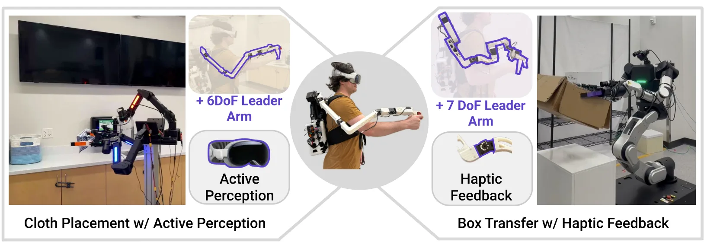
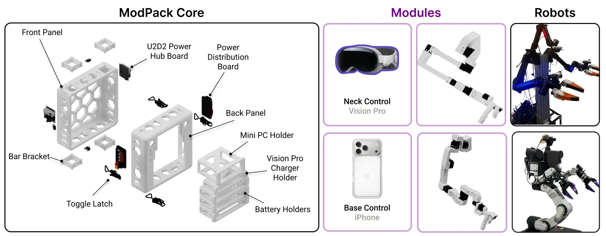
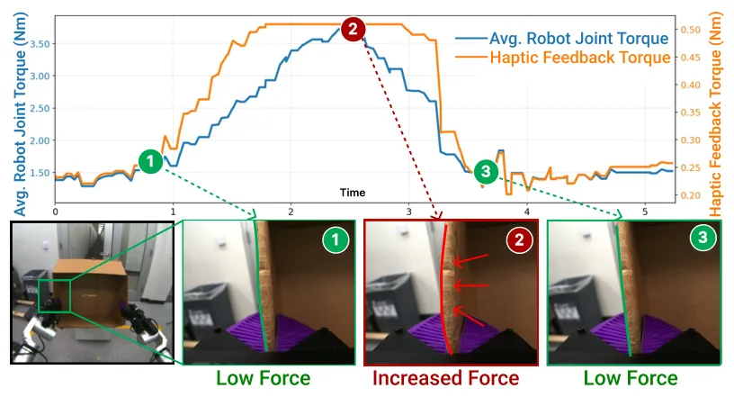
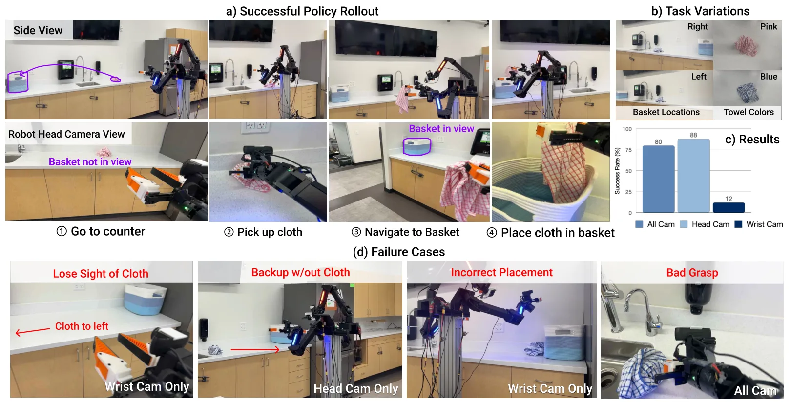
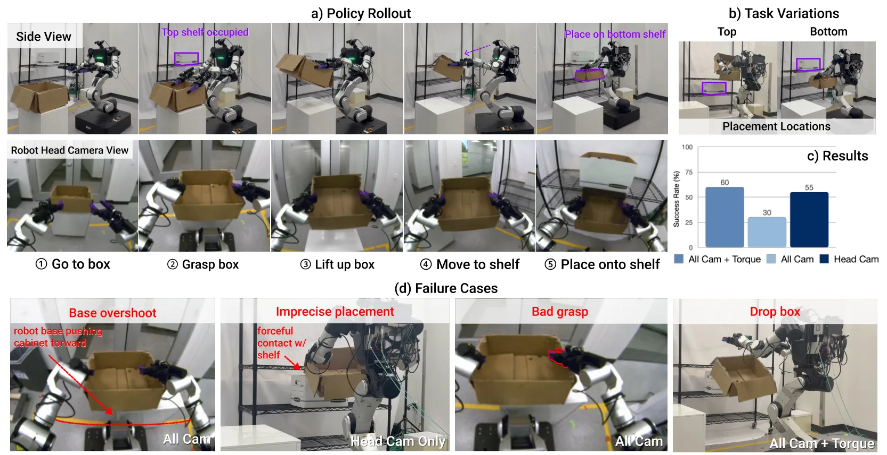
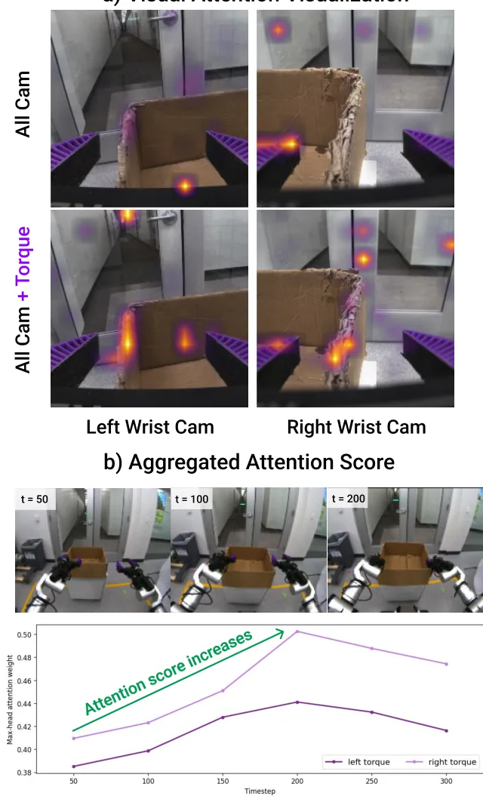

ModPack：双臂移动操作的可扩展遥操作接口ModPack: An Extensible Teleoperation Interface for Bimanual Mobile Manipulation
对主动感知和多传感器数据采集基础设施有参考价值，但不是自主定位方法，摘要也缺少标定、同步和位姿精度指标。
一句话工作总结
以自包含背包和插拔模块统一双臂移动操作遥控、主动感知及多平台数据采集。
摘要
ModPack 是一个模块化、可扩展的遥操作系统，通过自包含 wearable backpack 集成 onboard computation、power、communication 与 data storage。在共享接口之上，系统支持 joint-level teleoperation、haptic feedback、mobile manipulation 和 active perception 等 plug-and-play modules。作者在两种机器人平台和真实移动操作任务上验证其可复用性，并计划开源完整硬件设计与软件栈，用于数据采集和策略学习。
Existing teleoperation systems are often tailored to specific robot hardware and task domains, limiting their scalability and adaptability. We present ModPack, a modular and extensible teleoperation system designed to support diverse robot embodiments and task requirements within a unified framework. At the core of ModPack is a self-contained wearable "backpack" that integrates onboard computation, power, communication, and data storage. Built on top of this shared interface, the system supports plug-and-play capability modules including joint-level teleoperation with haptic feedback, mobile manipulation, and active perception. Experiments across two distinct robot platforms and real-world mobile manipulation tasks demonstrate that ModPack provides a flexible and reusable framework for data collection and policy learning. To support future research, we open-source the complete hardware design and software stack. Project website: https://modpack-robotics.github.io/
中文解读摘录
- 作者：Joshua Citron, Renee Zbizika, Zeyi Liu, Shuran Song
- 价值判断：统一 onboard compute、power、communication 和 storage，并以 plug-and-play 模块支持 mobile manipulation 与 active perception；可作为采集具身定位/操作数据的工程平台参考。
- 资源：在两种机器人平台与真实移动操作任务上验证，并承诺开源完整硬件设计和软件栈。
- 领域边界：摘要未给出 SLAM、标定、定位精度或时延的定量结果，核心贡献是 teleoperation infrastructure，不是自主定位算法。
- 链接：arXiv · 项目页
图表/页面预览
{kind=link}

{kind=link}

{kind=link}

{kind=link}

{kind=link}

{kind=link}
